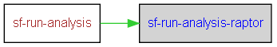

|
Helium API | ||||||
| prev next | frames no frames | ||||||
Location
d:\maintools\sf-config\common\build.postbuild.xml:303:
Conditional execution
No conditions on target execution.
| Name |
|---|
| perl |
| perl |
| perl |
| perl |
| perl |
| perl |
| Name | Edit status |
|---|---|
| User editable properties | |
| Internal properties | |
| build.id | discouraged |
| build.log.dir | discouraged |

<target name="sf-run-analysis-raptor">
<echo message="Preprocessing *_compile.log files"/>
<delete file="${build.log.dir}/analysis/${build.id}_preprocess.log"/>
<for param="logfile">
<path>
<fileset dir="${build.log.dir}">
<include name="*_compile.log"/>
<exclude name="*build_check_compile.log"/>
</fileset>
</path>
<sequential>
<propertyregex override="yes" property="preprocessedlogfile" input="@{logfile}" regexp=".*[\\/](.*)_compile\.log" replace="\1_compile_preprocessed.log"/>
<echo message="Preprocessing @{logfile}..."/>
<exec executable="perl" dir="${sf.common.config.dir}/tools/raptor" failonerror="false" input="@{logfile}" output="${build.log.dir}/analysis/${preprocessedlogfile}" errorProperty="@{logfile}">
<arg value="${sf.common.config.dir}/tools/raptor/preprocess_log.pl"/>
</exec>
<echo file="${build.log.dir}/analysis/${build.id}_preprocess.log" append="true" message="${@{logfile}}${line.separator}"/>
</sequential>
</for>
<echo message="Extracting whatlog information from *whatlog*_compile_preprocessed.log files"/>
<for param="whatlogfile">
<path>
<fileset dir="${build.log.dir}/analysis">
<include name="*whatlog*_compile_preprocessed.log"/>
</fileset>
</path>
<sequential>
<echo message="Extracting whatlog info from @{whatlogfile}..."/>
<exec executable="perl" dir="${sf.common.config.dir}/tools/raptor" failonerror="false" output="${build.log.dir}/analysis/${build.id}_whatlog.log" append="true">
<arg value="${sf.common.config.dir}/tools/raptor/parse.pl"/>
<arg value="--releaseable"/>
<arg value="--log=@{whatlogfile}"/>
<arg value="--basedir=${build.log.dir}"/>
<arg value="--append"/>
</exec>
</sequential>
</for>
<echo message="Extracting error information from *_compile_preprocessed.log files"/>
<for param="raptorlogfile">
<path>
<fileset dir="${build.log.dir}/analysis">
<include name="*_compile_preprocessed.log"/>
</fileset>
</path>
<sequential>
<echo message="Extracting error info from @{raptorlogfile}..."/>
<propertyregex override="yes" property="raptorconfig" input="@{raptorlogfile}" regexp=".*[\\/].*__(.*)\.whatlog_(single|multiple)_thread.*" replace="\1" casesensitive="false" defaultValue="noconfig"/>
<exec executable="perl" dir="${sf.common.config.dir}/tools/raptor" failonerror="false" output="${build.log.dir}/analysis/${build.id}_raptorparse.log" append="true">
<arg value="${sf.common.config.dir}/tools/raptor/parse.pl"/>
<arg value="--error"/>
<arg value="--warning"/>
<arg value="--unreciped"/>
<arg value="--recipe"/>
<arg value="--config=${raptorconfig}"/>
<arg value="--log=@{raptorlogfile}"/>
<arg value="--basedir=${build.log.dir}/raptorbits"/>
</exec>
</sequential>
</for>
<echo message="Summarizing Raptor data"/>
<exec executable="perl" dir="${sf.common.config.dir}/tools/raptor" failonerror="false" output="${build.log.dir}/analysis/${build.id}_raptorparse.log" append="true">
<arg value="${sf.common.config.dir}/tools/raptor/summarize.pl"/>
<arg value="--raptorbitsdir=${build.log.dir}/raptorbits"/>
<arg value="--outputdir=${build.log.dir}"/>
</exec>
<!-- Now iterate through the generated TSVs to sort them and remove duplicates -->
<for param="tsv">
<path>
<fileset dir="${build.log.dir}">
<include name="releaseables/**/*.tsv"/>
</fileset>
</path>
<sequential>
<exec executable="perl" input="@{tsv}" output="@{tsv}">
<arg value="${sf.common.config.dir}/tools/sortUnique.pl"/>
</exec>
</sequential>
</for>
<!-- Cook the raptor analysis further to produce something in the right format for the BRAG system -->
<exec executable="perl" output="${build.log.dir}/summary/Raptor_BRAG.xml" logError="yes">
<arg value="${sf.common.config.dir}/tools/brag/raptorToBRAG.pl"/>
<arg value="--raptorsummary"/>
<arg value="${build.log.dir}/raptorbits/summary.csv"/>
</exec>
<!-- And copy the XSL so the output can be transformed by a browser -->
<copy file="${sf.common.config.dir}/tools/brag/brag.xsl" toDir="${build.log.dir}/summary/"/>
</target>
|
Helium API | ||||||
| prev next | frames no frames | ||||||